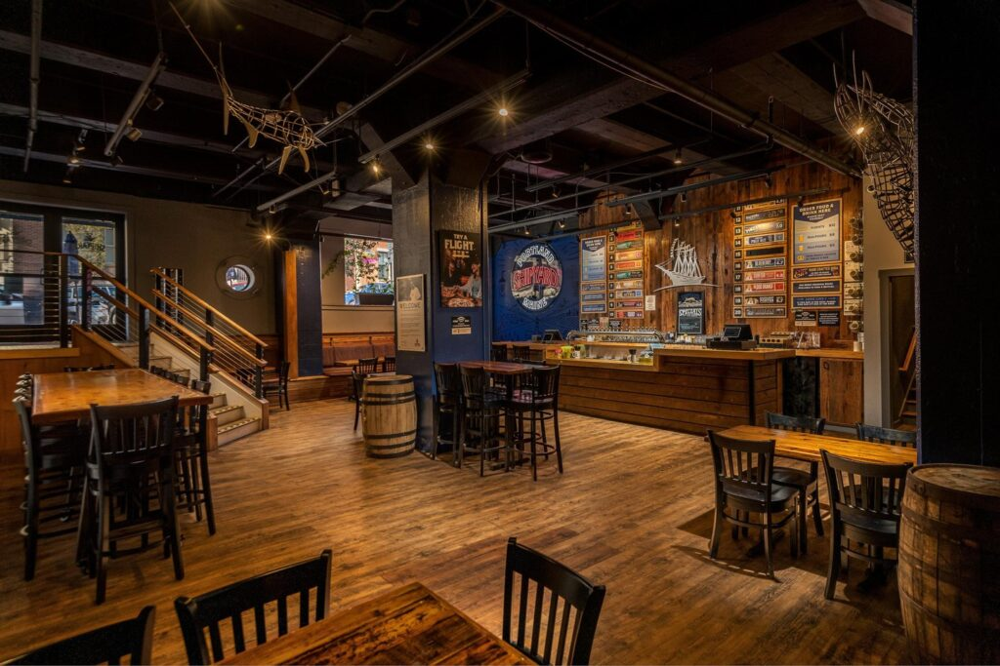

Brewing Company is a destination brewery in NH's Mount Washington Valley. Most of their customers do not live nearby. They drive up from Boston for the day, which means a slow Saturday is often a Saturday when Boston is cold or rainy, not when the brewery's local weather is bad. That insight was already in the team's gut, but had never been quantified. They wanted a forecast that combined real sales data with weather signals from both ends of the customer journey, plus a way to measure how much weekends and live music actually contributed to revenue.
The work moved through three phases.
The first was data preparation. I worked with three years of POS data and pulled local NH weather plus Boston weather from public APIs. Including both was deliberate. Boston weather captures whether customers decide to make the trip. NH weather captures local conditions once they arrive. The combination tells a more complete story than either alone.
The second was modeling. I built a Random Forest regression model on the combined dataset, then validated the structure by running a parallel decision tree and a baseline regression for comparison. The Random Forest improved forecast accuracy from a 70% baseline to 88%. Snow reduced revenue by roughly $80 per day. Rain modestly increased revenue by about $43, likely because customers who already planned to come stuck with the plan and spent more time indoors.
The third was attribution. I used a group-level comparison framework to isolate the revenue impact of weekends and live music. The data was split into four buckets (weekday with no music, weekday with music, weekend with no music, weekend with music), which made the comparison clean. The analysis quantified roughly $2,400 in average weekend uplift and $1,600 in average live music uplift, giving the brewery defensible numbers to use when deciding which weekends to book talent.